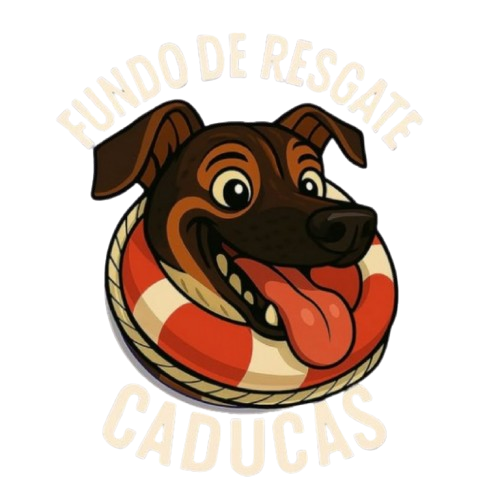
Cuidado, transparência e amor em cada resgate
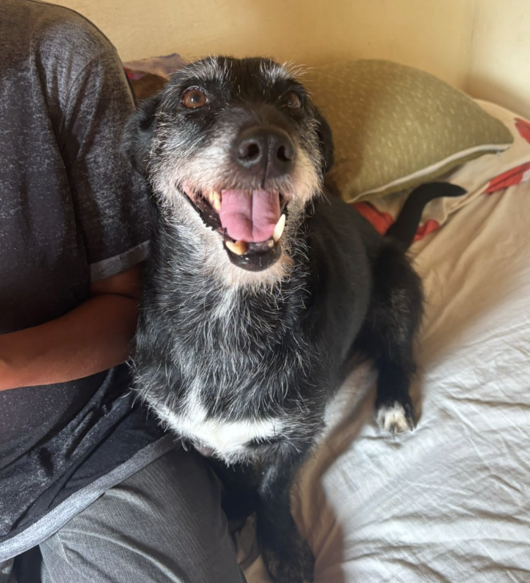
Última sessão realizada com sucesso. Seguimos com acompanhamento e muito carinho.
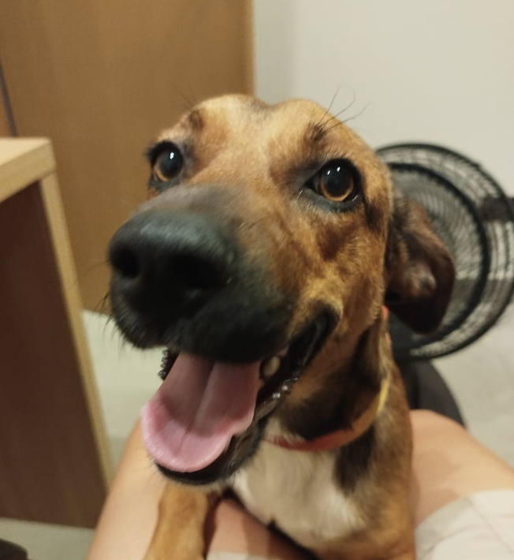
Estamos torcendo para sua nova família se adaptar à rotina com uma filhote ligada no 220V para confirmar a adoção nos próximos dias!
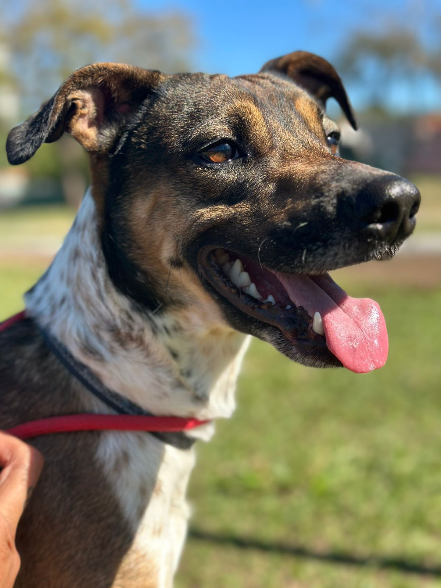
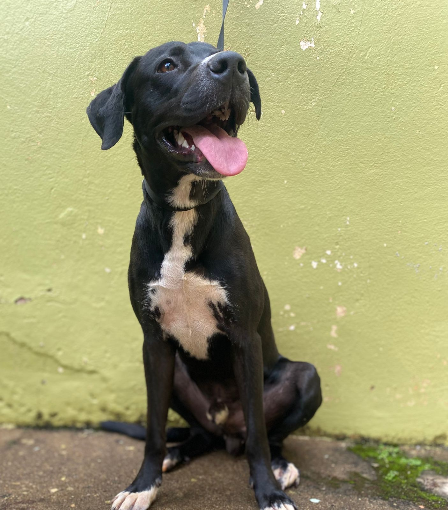
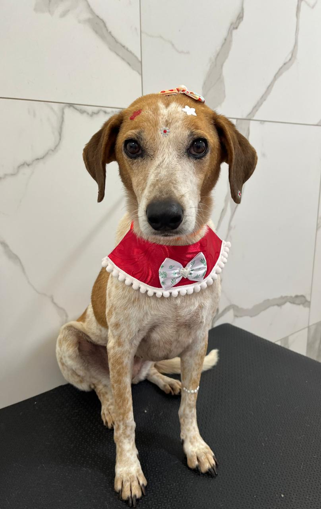
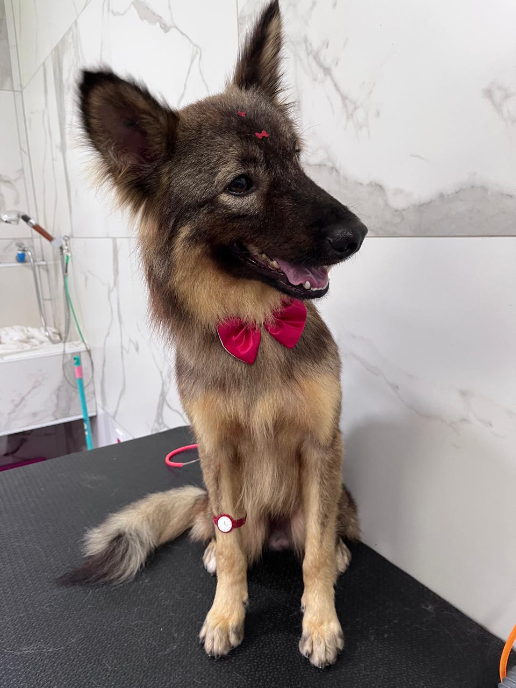
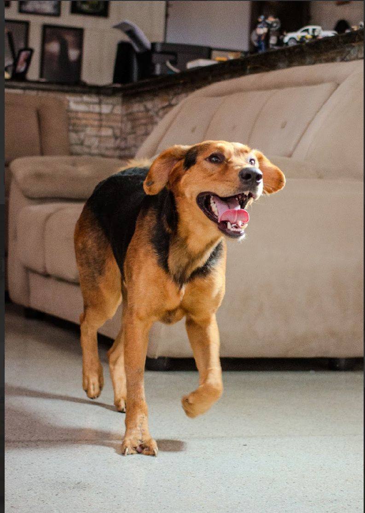
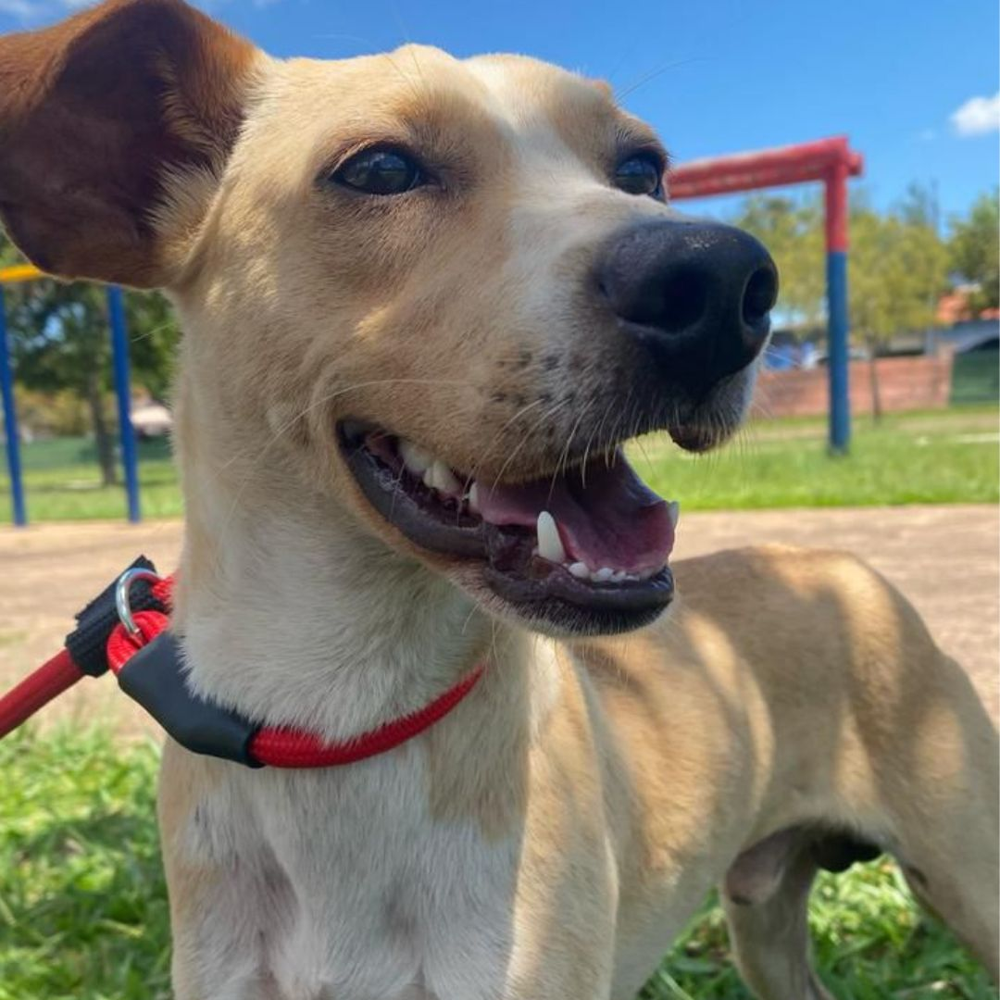
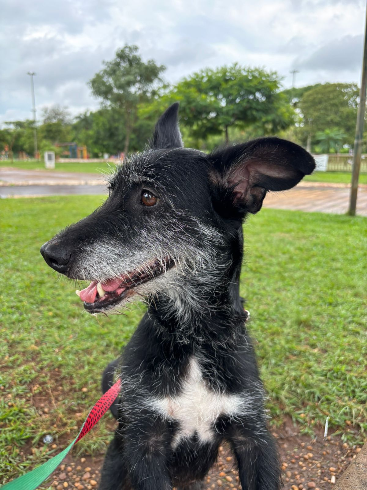
Sua ajuda mantém os resgates acontecendo. Com as contribuições, conseguimos pagar exames, remédios, cirurgias, vacinas, alimentação, hospedagem temporária e também realizar doações pontuais para outras ONGs e protetores independentes.
O Fundo de Resgate Caducas surgiu com a proposta de doações mensais, o que nos permite ajudar de forma constante. Em casos extremos, também pedimos apoio extra através das redes sociais.
Chave (e-mail): ajudecadu@gmail.com
Mercado Pago (Beatriz)
Obrigada por apoiar o projeto 💜
Se você preferir, pode apoiar com uma assinatura recorrente no cartão de crédito, processada com segurança pelo Mercado Pago.
Todos os meses publicamos as entradas e saídas do fundo. Se tiver qualquer dúvida, é só chamar a gente.
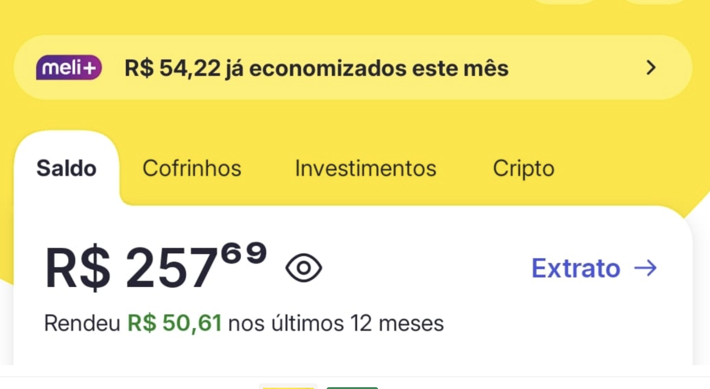
| Tipo | Descrição | Valor (R$) |
|---|---|---|
| Entrada | Saldo inicial | 79,82 |
| Entrada | Doações do período | 837,77 |
| Saída | Ração de gatas para Rita | 89,90 |
| Saída | Doação Projeto LT (sachês) | 100,00 |
| Saída | Doação Gabi gatil (coelho) | 100,00 |
| Saída | Últimas vacinas da Cacau | 160,00 |
| Saída | Consulta e hemograma para Lobinho (pós adoção) | 210,00 |
| Resumo | Total de saídas | 659,90 |
| Saldo final | 257,69 | |